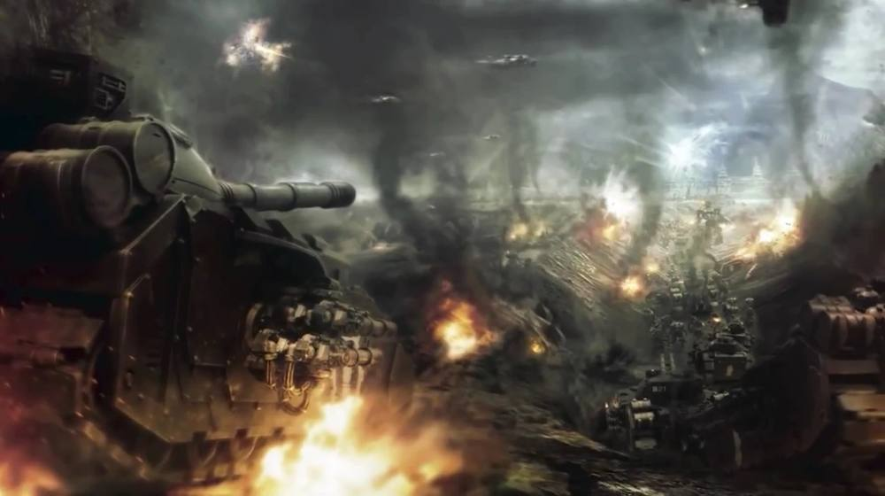

Drop Site Massacre
| Drop Site Massacre | |
|---|---|
| Battle of Isstvan V, part of the Horus Heresy | |
 The loyalist assault into the Urgall Depression on Isstvan V, moments before the traitor Legions opened fire | |
| Date | c. 006.M31 |
| Location | Isstvan V, Isstvan system, Segmentum Obscurus |
| Result | Traitor victory; the Iron Hands, Salamanders and Raven Guard reduced to the "Shattered Legions" |
| Belligerents | |
| Loyalists Iron Hands Salamanders Raven Guard Legio Atarus Imperial Army regiments | Traitors Sons of Horus Emperor's Children World Eaters Death Guard Iron Warriors Word Bearers Night Lords Alpha Legion Dark Mechanicum and Titan Legions |
| Commanders and leaders | |
| Ferrus Manus (killed) Vulkan (missing) Corvus Corax (wounded) Gabriel Santar | Horus Fulgrim Perturabo Lorgar Konrad Curze Alpharius Omegon Angron Mortarion |
| Casualties and losses | |
| Tens of thousands of loyalist Astartes; each of the three loyalist Legions left with a few thousand survivors. One primarch killed, one wounded, one lost | |
The Drop Site Massacre, also called the Battle of Isstvan V, was the second great atrocity of the Horus Heresy. In about 006.M31 three Legions of the Emperor's loyal Space Marine Legions, the Iron Hands, Salamanders and Raven Guard, were sent to the dead world of Isstvan V to bring the Warmaster Horus to account. At the moment of their landing, four further Legions that had been sent as their reserve revealed that they had sided with Horus, and the loyalists were caught between two armies. The massacre cost the Imperium three of its Legions as fighting forces, killed the primarch Ferrus Manus and left Corvus Corax gravely wounded. It also announced to the Emperor that the Heresy was a war on a galactic scale.[1][2]
Background
[edit]After the destruction of Isstvan III, the frigate Eisenstein carried news of the Warmaster's treachery to Terra. Rogal Dorn, the Praetorian of Terra, and the Emperor's regent Malcador the Sigillite ordered seven Legions to the Isstvan system under the Emperor's authority to bring Horus to heel. The first wave was composed of the Iron Hands, Salamanders and Raven Guard. The reserve was composed of the Iron Warriors, Alpha Legion, Word Bearers and Night Lords. Ferrus Manus was given overall command of the first wave, and its primarchs were Vulkan and Corax.[1]
The Emperor had not known that four of the reserve Legions had already given their oaths to the Warmaster. Horus had also had time to prepare. On Isstvan V, a world that had long been dead and whose basalt plains were crossed with the ruins of an ancient civilisation, his four Legions, the Sons of Horus, Emperor's Children, World Eaters and Death Guard, had dug earthworks and trenches intended to withstand orbital bombardment. The Warmaster also used the time to lure the loyalists to a landing zone that he had chosen himself.[1]
The battle
[edit]The landing
[edit]The loyalist fleet entered orbit over Isstvan V without difficulty, and the first wave landed by drop-pod and gunship in the Urgall Depression, a vast basin of black sands. The loyalists were convinced they faced only the four Legions that Horus had taken to Isstvan III, whose numbers had been reduced by the purge. Ferrus Manus placed himself with ten companies of his elite Morlock Terminators at the centre. The Salamanders under Vulkan attacked the left flank, and the Raven Guard under Corax the right. By Imperial reckoning, roughly forty thousand loyalists faced thirty thousand traitors, and the early fighting favoured the loyalists.[1]
The betrayal
[edit]The traitors were ready. Horus had chosen the position of the drop site, and his artillery and Titans, among them the war machines of the Legio Mortis, fell on the first wave. At the signal the reserve Legions, which had arrived in orbit and been welcomed as allies, opened fire on the loyalist fleets and then landed on the surface behind them. The Iron Warriors, Night Lords, Word Bearers and Alpha Legion fell on the loyalist rear and flanks.[1]

Ferrus Manus fought through the traitor lines to reach Fulgrim, and the two primarchs duelled on the Urgall Depression. Ferrus was killed, and his head was later delivered to Horus. His Legion's Morlocks fought to the last at the centre of the field. Vulkan, whose Legion was assaulted by a tactical nuclear barrage and surrounded, was lost to sight and presumed dead. The Raven Guard suffered a crushing assault on their flank. Corax, whose Legion fought a delaying action, was gravely wounded.[1][3]

Escape
[edit]A number of Salamanders, Iron Hands and Raven Guard escaped from the Urgall Depression, many with the help of Corax's tactics, and fled the system. Several thousand survivors of each Legion made their way off the world in the following weeks, and the Raven Guard, carrying their wounded primarch, withdrew through a series of long retreats in the ravines of the plain. Their escape was recorded as a campaign in its own right by the Raven Guard's surviving captains, and the tactical chart shown here records its five phases.[1][3]

Aftermath
[edit]By the end of the battle the three loyalist Legions had been reduced to a fraction of their strength, and have since been known as the "Shattered Legions". The Iron Hands lost their primarch, the Salamanders theirs to an unknown fate, and the Raven Guard theirs to injury. The survivors played the rest of the war as raiders and saboteurs, carrying the gene-seed of their lost brothers back to the Emperor's service. Horus had eight Legions in open revolt, nine when the Thousand Sons joined him, and he could advance on Terra with no loyalist force strong enough to stop him.[2]

On Terra, the news of Isstvan V is held by Imperial historians to have settled the Emperor's decision to prepare the defence of the Throneworld. The Emperor's court recalled all available forces, and in the words of the Administratum's reckoning the massacre "closed the door of the Great Crusade".[3]
After the Heresy the world was reclaimed in a later campaign in the early millennia of the Imperium, in about M32.[a] The black sands of the Urgall Depression are said to preserve the wreckage of the war.[4]
Timeline
[edit]| Date | Event |
|---|---|
| 005.M31 | The Isstvan III atrocity; the Eisenstein carries word of it to Terra. |
| 005–006.M31 | Rogal Dorn and Malcador the Sigillite order seven Legions to the Isstvan system under Ferrus Manus. |
| 005–006.M31 | Horus fortifies the Urgall Depression on Isstvan V with his four Legions and the Legio Mortis. |
| 006.M31 | The first wave, the Iron Hands, Salamanders and Raven Guard, lands in the Urgall Depression. |
| 006.M31 | The Iron Warriors, Night Lords, Word Bearers and Alpha Legion turn on the loyalists from the rear. |
| 006.M31 | Ferrus Manus is slain by Fulgrim; Vulkan is lost and Corvus Corax gravely wounded. |
| 006.M31 | The survivors escape over the following weeks; the three Legions become the Shattered Legions. |
| 006–007.M31 | Horus begins his advance on Terra; the Battle of Calth and the Battle of Phall follow in 007.M31. |
| c. M32 | Isstvan V is reclaimed for the Imperium.[b] |